Non bisogna mai lasciare borse incustodite che potrebbero anche solo vagamente sembrare
della spazzatura. Qualcuno potrebbe pensare che è roba da buttare.
Quando in politica usiamo "premier" per indicare il capo del governo in realtà stiamo
omettendo "ministro" e dicendo "primo" in francese, premier.
Il programma Erasmus Mundus è proprio una figata. Se lo avessi scoperto in tempo...
In certe piscine, come qui a St.Genis-Pouilly e a Budapest, ci sono delle mini centrifughe
in cui puoi asciugarti il costume.
Se hai due opzioni, sicuramente sceglierai quella sbagliata. Ma questo già si sapeva e si
chiama legge di Murphy.
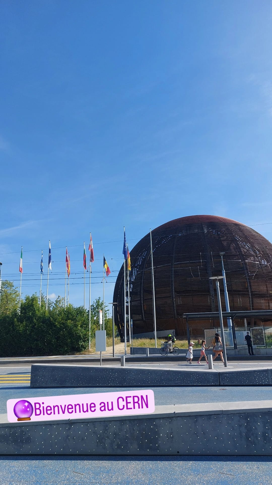
🔮 Il primo giorno
5 ago 2024
Bisogna fidarsi dei supervisor, ma non troppo. Sempre meglio fare una domanda in più che una
in meno.
L'accento bergamasco mi fa troppo ridere. "Ue, andiamo giù dabbasso"
Per pagare il caffè serve una carta su un conto svizzero.
Ho imparato come creare un virtual environment con dei jupyter notebooks.
E' proprio vero che ci sono italiani dappertutto! E si fanno pure riconoscere, vedesi urli e
schiamazzi quando l'Italia pallavolo ha vinto alle Olimpiadi.
E' sempre un buon momento per fare una pausa.
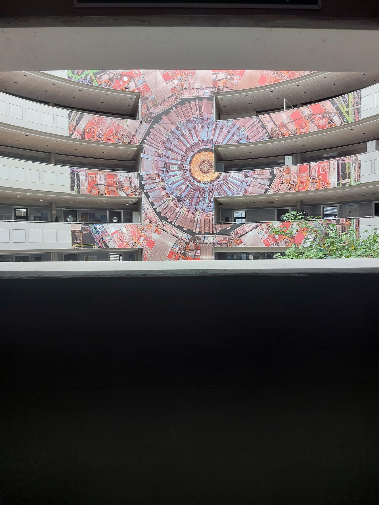
😈 Il badge
6 ago 2024
La carta d'identità NON si lascia in giro perchè si rischia di PERDERLA.
Cercare di fare una faccia intelligente non basta per venire bene in una foto.
Maleesh dice sono una "funny person" non ho capito se è una cosa positiva o negativa però.
Non tutti i francesi sono antipatici, ho incontrato una signora gentile oggi in piscina.
"Ehm devo un attimo ingranare". "Tranquilla che anche quando vai avanti rimane uguale".
Penso "imparerò", ma in realtà se guardo le persone più grandi di me anche loro a volte non
sanno. Ed è questo il bello.
La comunicazione è super importante. Puoi non saper fare nulla, ma lo devi saper comunicare
nel modo giusto.
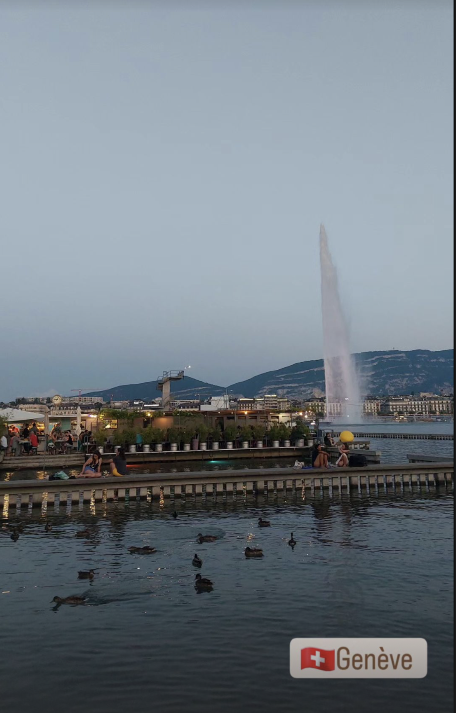
Ginevra
7 ago 2024
Le cose non sono così semplici come sembrano. Se vedi una cosa che ti sembra semplice,
molto probabilmente non lo è.
La fonduta è il piatto tipico di Ginevra. C'è una piattaforma artificiale sul lago in cui si
può fare il bagno e mangiare. Ci sono le cameriere che vanno in giro con questi padellini
rossi pieni di fonduta urlando nomi alquanto improbabili.
La gente di Trieste mi perseguita, me la ritrovo ovunque.
Il sapone può assumere forme alquanto strane.
C'è un gatto tigrato bellissimo che abita nel nostro giardino.
Qua al CERN sono fuori come dei balconi. Una volta all'anno gli studenti possono andare giù
nel tunnel e pulire ATLAS con una specie di aspirapolvere (che non si dice "aspirator",
comunque giuro che non sono stata io a usare questa parola).
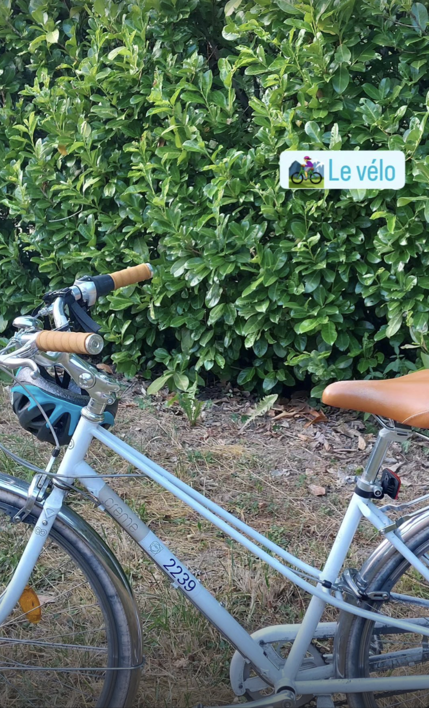
La bicicletta
8 ago 2024
Evidentemente, ho la faccia di una che guida la graziella. Il tipo del Mobile Center mi ha
squadrato da capo a piedi
e mi ha dato una graziella bianca tipo quella della zia Giuse.
La salita a piedi è faticosa, ma la salita in bici è ancora peggio.
Un ragazzo greco (forse?) molto gentile mi ha accompagnato all'uscita del campus, visto che
mi ero persa.
Vorrei anche a casa una lampada con i buchi, fa dei bei disegni sul soffitto.
Il caschetto per la bici è obbligatorio.
Maleesh conosce "Sarà perchè ti amo" e anche "Bella ciao". Ma io dico con tutte le belle
canzoni che abbiamo in Italia...
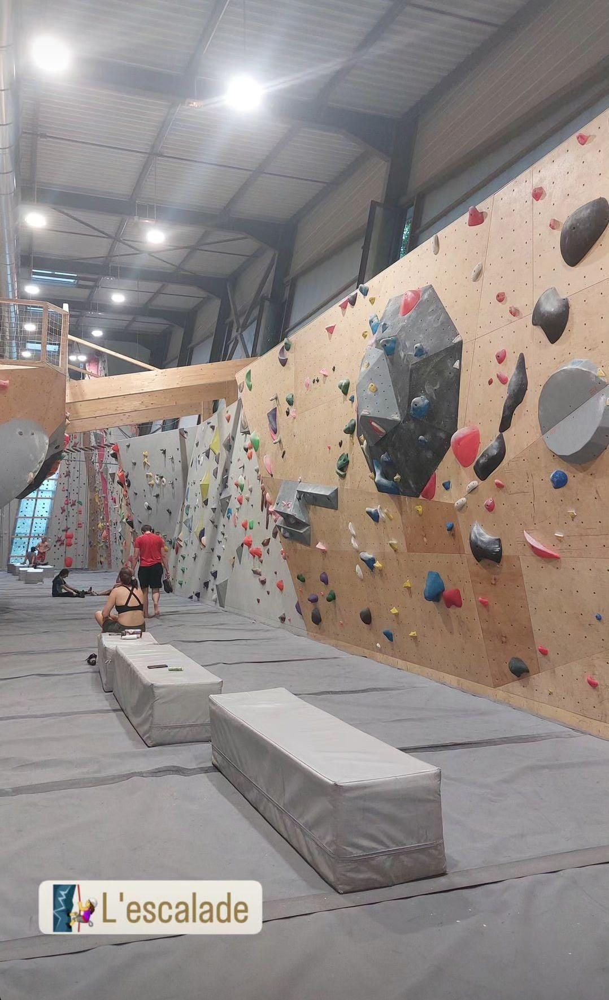
L'arrampicata
9 ago 2024
E' molto comune, tra i fisici, amare il climbing (termine milanese per indicare
l'arrampicata).
Un signore italiano antipatico si è intromesso in una discussione che stavamo avendo fuori
dalla palestra.
Certi giochi da tavolo sono proprio complicati, io mi chiedo cosa sia saltato in testa a
chi li ha inventati.
Oltre a riuscire a passare il processo di selezione, è anche complicato immatricolarsi al
dottorato. Se possono ostacolarti in qualche modo, lo faranno.
C'è una ragazza che prima lavorava in ATLAS e ora fa previsioni del meteo. Si può sempre
cambiare. Non pensare mai
che la scelta che fai è definitiva. Anzi, cambiare è segno di intelligenza.
Le rotonde di Saint Genis Pouilly sono addobbate per festeggiare le olimpiadi. Ad esempio a
Lyion c'è il triathlon.
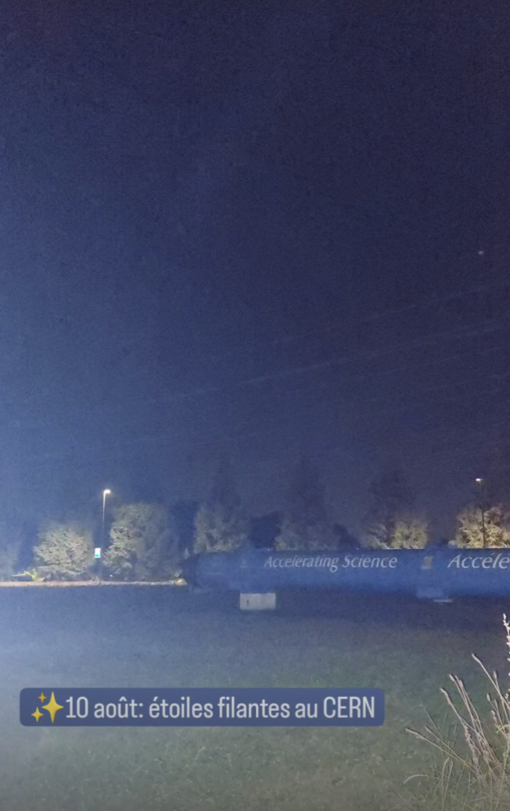
Le stelle cadenti
10 ago 2024
Bisogna DORMIRE di notte. Altrimenti, la testa può far male, anche malissimo.
Quando vado in pensione, oltre a prendere una laurea in storia dell'arte, mi ritiro in un
cottage in mezzo ai campi.
Non è carino lasciare i cani senza guinzaglio, se non si è a casa propria. Qualcun altro
potrebbe arrabiarsi e avrebbe anche ragione.
E' incredibile come si possa creare una bella sintonia in un gruppo anche solo nell'arco di
poche ore.
Abbiamo riso alle lacrime. Di quelle risate proprio fragorose che fanno bene alla salute. I
vez di Portogruaro (Concordia Sagittaria) sono fuori come delle mine.
Ho visto una stella cadente. Gli altri molte di più. Filippo neanche una. Spero di aver
scelto il desiderio giusto.
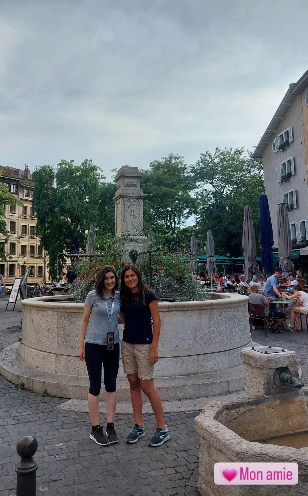
Chiara
11 ago 2024
Per mangiare bene in Paesi come la Germania e la Svizzera, NON bisogna mangiare cose
tipiche.
E' sempre un buon momento per salire sul campanile, a vedere la cloche, di una chiesa.
La guida era di CMS ma ha parlato molto bene di ATLAS. Fair play.
Ci vorrebbe una bella tabella dello Standard Model nel Science Gateaway.
E' bellissimo il gioco della bilancia che mostra il contributo alla massa dell'energia.
Dovrebbero implementare anche l'idea di Stefano di triggerare il proprio evento. Io ho
fatto notare che nella maggior parte dei casi sarebbe un evento poco interessante, ma lui
dice che il pubblico che non conosce la fisica non se ne accorge che è un evento poco
interessante.
Ho finito a caso un cruciverba del vez, spuntato per caso dal suo zaino mentre mettevamo
via il cioccolato acquistato. Ops.
Abbiamo acquistato i biglietti e poi li abbiamo persi, ma avevamo la "ricevuta" di
pagamento sul Google Wallet.
Non si capisce perchè diamine in Svizzera non c'è il roaming, cosa gli costa metterlo anche
lì. Che complicazione.
Il tempo sul tram è scorso in fretta perchè abbiamo parlato di cose interessanti, anche
serie a volte.
Le esperienze traumatiche rafforzano le amicizie.
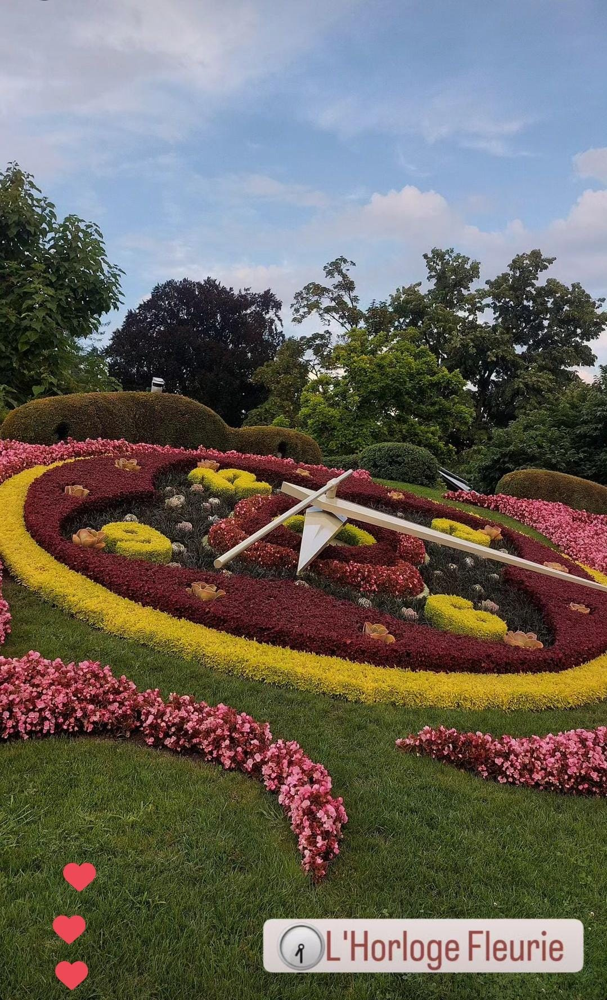
L'orologio
12 ago 2024
Al supermercato un commesso gentile mi ha ascoltato e ha cercato di aiutarmi anche se non
sapevo bene il francese.
Incredibile. Elena ha avuto un'esperienza traumatica simile alla nostra. Fili rossi.
Quando si prende il contenitore di plastica, va restituito, ti danno 10 cfu, ehm chf.
Ho comprato dei polaretti tipo quelli della Maria Luigia.
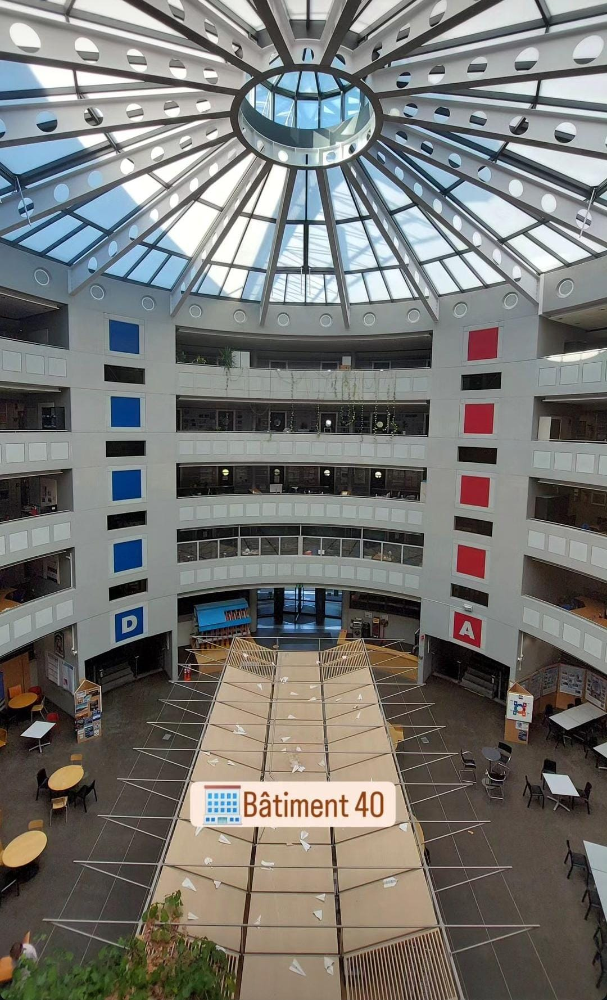
Lavoro
13 ago 2024
Oggi sono raggiunti 10.000 fill di LHC in Run 3, obbiettivo mai raggiunto prima. Si temeva
un bug, ma è andato tutto bene.
"Tu segui il calcio?" "No, ma lo subisco."
Per pulire il codice pubblico di Athena hanno rimosso gli insulti e le parolacce solo in
inglese, ovviamente, e in italiano, chissà perchè.
Abbiamo parlato di cicogne, sia per via di Colmar che per via del CERN, e proprio al
pomeriggio abbiamo visto uno stormo. Fili rossi. Incredibile.
Per fare le telefonate ci si può mettere lì davanti a casa.
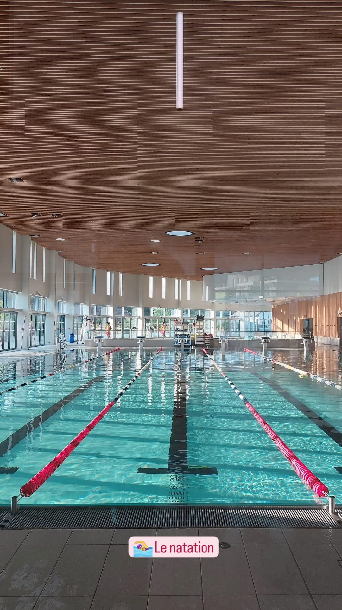
Piscina
14 ago 2024
Stamattina davanti al supermercato, chiuso per un problema tecnico, ho scambiato due
chiacchiere con una signora dell'Ecuador molto gentile.
Ho fatto un po' di ordine nei notebook, ora sono presentabili, e li ho caricati su GitLab.
Evviva.
Pensavo di essere sola per pranzo invece sono arrivate Claudia e Ilaria e inoltre ho fatto
una pausa post-pranzo lunghetta con i baresi e Tiziano. Il vez ha compiuto gli anni oggi,
quindi ha portato una torta Carrefour-made.
Ho finalmente visto Sarah, vuole andare in California per il master+phd.
Ho risentito Federica R. dopo anni. Studia Economia.
Abbiamo preparato una torta con gocce di cioccolato per domani senza fare danni.
Ho di nuovo perso l'orologio, ma lo ho ritrovato nel laundry basket.
Claudia dice che sono la nuova Federica, Federica a sua volta è stata la "nuova" Maria
Giulia.
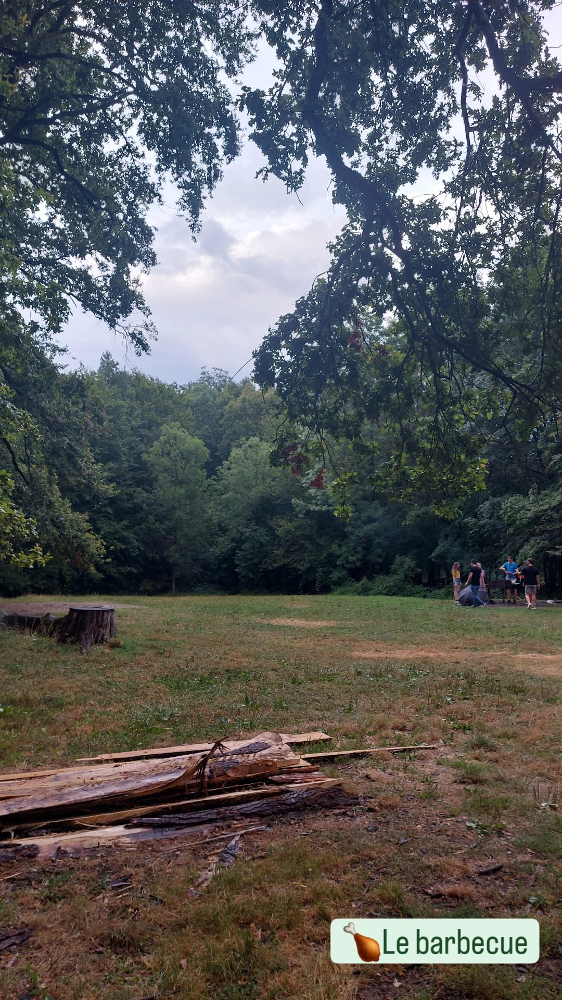
Grigliata
15 ago 2024
Neanche un pesante acquazzone può fermare la voglia di barbeque a ferragosto degli
italiani.
Oggi io e Federica ci siamo ritrovate in una situazione un po' random a pranzo. Abbiamo
prima incontrato Elene, la mia conquilina, e poi il prof. D'Auria, che per la prima volta in
trent'anni si era portato il pranzo da casa. Sua figlia fa un internship al CERN.
I gatti cacciano i topi solo per divertimento, non per mangiarli.
Mai interferire con la natura.
Ho conosciuto una Giulia M. che ama nuotare e correre, ha i capelli lunghi e scuri (e fin
qua potrei essere io) ma lei è Muon salpiffero Coordinator ed è ligure. Ed è molto carina.
Sempre meglio non rischiare. La soluzione B a volte può rivelarsi la migliore.
La torta con gocce di cioccolato è piaciuta. Giorgia e Sara erano contente non fosse
tiramisu.
Mi devo ricordare di comprare la polo del CERN, molto bella.
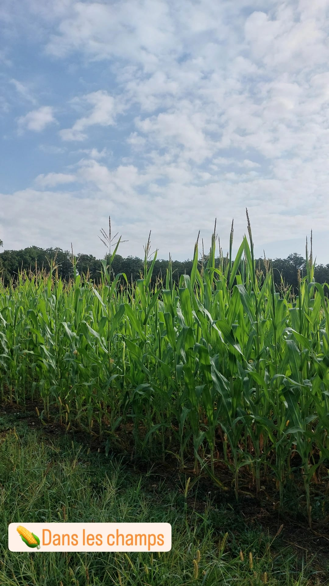
Nei campi
16 ago 2024
Sono andata a recuperare la bici al Terrain Jakob. E' stata una bella camminata tra i
campi.
E' tornata Laura e ci ha raccontato delle storie da famiglia del Mulino Bianco.
Oggi l'acqua del CERN aveva un sapore strano.
La macchina gialla come quella di Elena è proprio carina.
Non sono stata bene di stomaco.
Ogni tanto pranziamo con Dilia, avevo usato le sue slides per la parte di dark showers. E'
colombiana.
Dei bambini mi hanno urtato in piscina e mi hanno detto "Desolee Madame". Ma io dico non
sono abbastanza vecchia ancora da meritarmi il "Madame". Mannaggia.
Sta andando troppo in fretta il tempo, non voglio tornare a casa.
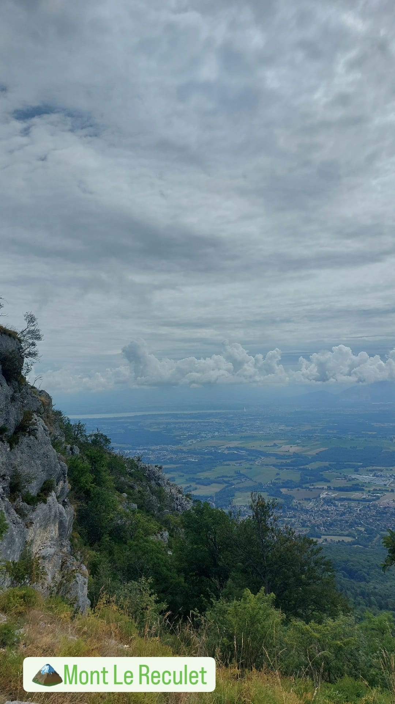
Mont Reculet
17 ago 2024
E' meglio non mettere fretta alle persone.
Piano piano si può arrivare ovunque.
Sono una "montain goat", apparently.
Nella nostra gita ognuno aveva il suo ruolo: io motivavo, facevo cheerleading, Maleesh era
la guida e Tiziano sparava super-cazzole e spacciava vitamine e cibarie varie.
La montagna lo fa.
"...like Monica Bellucci. I honestly cannot see any differences."
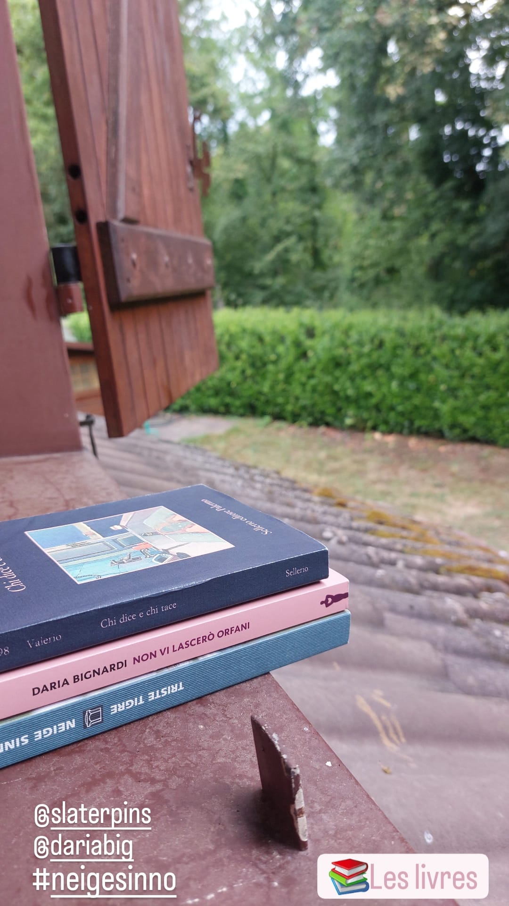
Riposo
18 ago 2024
Mi fanno un male le gambe...anche la testa.
Sono riuscita arrivare al supermercato in orario di chiusura anche oggi. Io proprio la
spesa con le luci accese non la voglio fare.
Ho mangiato uno dei pompelmi più buoni nella storia di tutti i pompelmi.
Ho cucinato la semola, mi devo ricordare che esiste, a volte me lo dimentico.
Abbiamo giocato a Taboo.
Ho fatto finta di studiare francese.
Ho avuto un gran freddo e mi sono messa la felpa per la prima volta da quando sono qua.
Ho messo la felpa per la prima volta, e me la sono pure dimenticata in giro, tipico mio.
Secondo me lo specchio di Yiota dimagrisce un sacco.
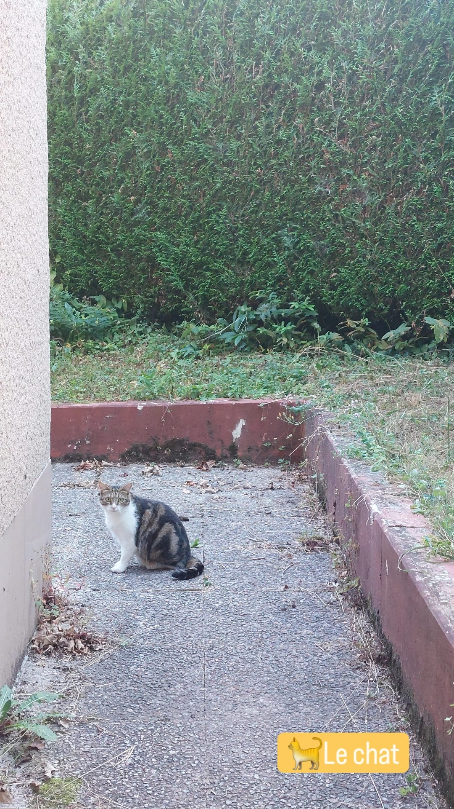
Primo meeting "ufficiale"
19 ago 2024
Ho patito freddo stanotte. Apro la finestra e mi sembra di essere a Ponte di Legno.
Sono arrivata in ufficio con la calma, inconsapevole della giornata che mi aspettava.
"Ma perchè Giulia Maineri parla con questa voce e dice ste stupidate?" - "Eh abbiamo
lavorato troppo insieme e ora siamo una cosa sola." "Bravi bravi vedo che c'è sintonia."
Oggi a pranzo c'era un ragazzo nuovo che pensavo fosse all'inizio del post-doc al massimo
invece ha già 2 figli, gasp.
Abbiamo visto un episodio di una serie tv random sul Netflix di Maleesh, un po' banale ma
ok. Sono 100% sicura che alla fine lui non muore e tutto ok.
La family va due giorni ad Andorra, dove a quanto pare non c'è il roaming, non si sa bene
perchè devono infognarsi in questo staterello inutile ma ok.
Il meeting comunque è stato molto utile e mi ha lasciato un sacco di cose da fare.
The style doesn't go at batteries, dice Tiziano vedendo la mia maglietta della salute
bianca.
Un po' di disagio
20 ago 2024
Oggi Elena era esaurita perchè gli si sono rotti gli occhiali. Aveva gli occhiali da sole.
L'ufficio di Milano era al completo, c'era perfino Federica. A pranzo con anche Sofia,
Claudia e una nuova che non avevo mai visto (mi sembra si chiami Chiara), quante ragazze!
E mancavano Ilaria e Dilia. In giro ci sono anche Sara, Giorgia e Giulia dei muoni ma non pranziamo mai con loro.
Abbiamo fatto una prova del discorso di laurea. Complicato perchè è fisica degli
acceleratori, ma si riusciva a seguire. Ha partecipato anche Elene.
Ho urtato un paletto dissuasore che c'è prima del ponticello e ho rischiato di rompere il
caschetto ma per fortuna è andato tutto bene.
Sto leggendo "Il colibrì", è un libro davvero particolare.
Ho usato la borsa della Decathlon di Fede, devo ricordarmi di restituirla.
Laura mi ha spiegato la faccenda del codice SCAB / OTP, che ansia.
"E' un sacco migliorato con l'inglese!" 2 minutes later: "No matter" per dire non ti
preoccupare faccio io. Lacrime.
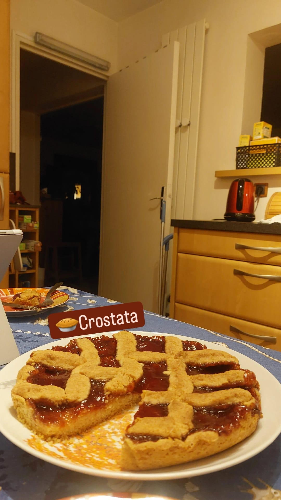
La crostata
21 ago 2024
Si prospetta una giornata tranquilla. Non c'è il sole e non fa tanto caldo.
Dopo pranzo sono andata a salutare i baresi, che li ho visti in un tavolo fuori. Mi fanno morire dal ridere, soprattutto Felice. Invece c'era un altro ragazzo nuovo con loro che ha avuto un uscita poco gradevole, ma pazienza.
Ho messo la maglietta a righe della raffaella, molto carina, mi è piaciuto indossarla.
Sofia è sempre vestita molto elegante.
Elena mi ha accompagnato all'ATLAS Secretariat, bel posto!
Eravamo in corridoio ad aspettare il ragazzo di Laura, ad un certo punto Elena con molta non-chalance è andata a bussare alla sua porta.
Per un attimo oggi ho avuto paura di aver fatto perdere un sacco di tempo a tutti. Per fortuna la tabella alla fine era giusta.
Ho preparato una farewell crostata. Senza mattarello!! Con tutti il ben di dio che ha la Yiota, non ha un rolling pin. Ho fatto un pattern a caso, ma alla fine era molto carina, e sopratutto buona.